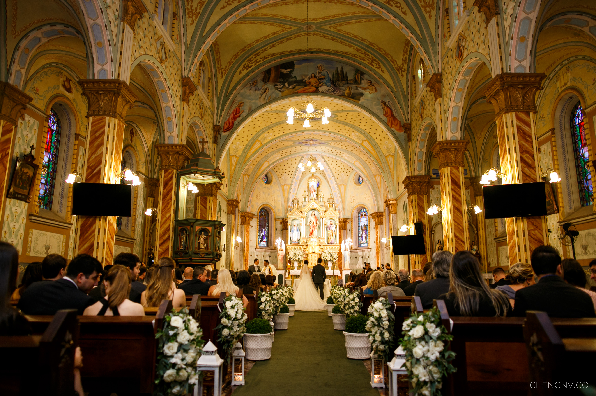
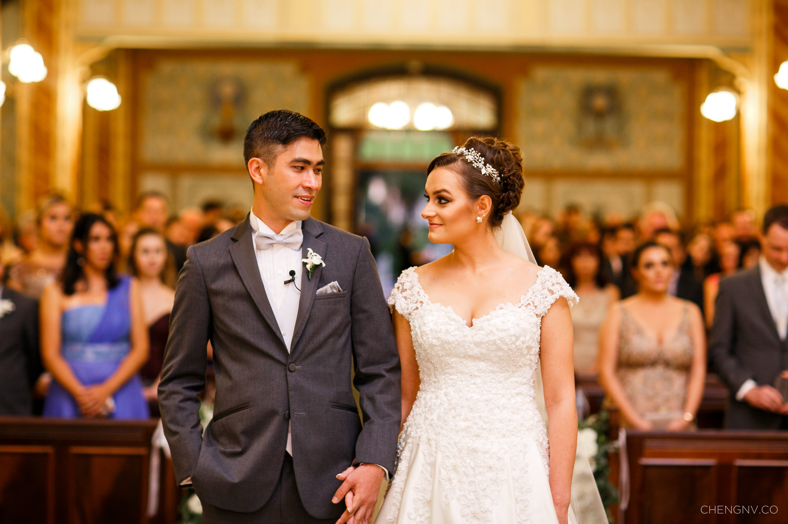

Casamento na Igreja - Giovana e Leonardo
28 de agosto de 2017
O Casamento na Igreja é um momento de bençãos, amor e oração!
A música cria um ambiente requintado, trazendo emoção, e complementando o ritual de celebração do sacramento do matrimônio.
Igreja Sant´Ana de Abranches Foto: Cheng NVA Giovana e o Leonardo realizaram a cerimônia de casamento na Igreja Sant´Ana de Abranches (Curitiba) no dia 29 de abril de 2017!

Igreja Sant´Ana de Abranches - Quartilis Foto: Cheng NVA música ficou por conta do Quartilis, em formação de sexteto, com violino, viola erudita, violoncelo, trompete/clarim, piano digital e cantora soprano. O repertório musical foi escolhido para emocionar e traduzir em sons tudo que este momento representava na vida dos dois!!!

Giovana e Leonardo - Quartilis Foto: Cheng NV(Clique nas músicas para ver os videos desta cerimônia no Youtube)
- Entrada de Padrinhos: A Thousand Years – C. Perri
- Entrada dos Pais do Noivo: Perhaps Love – John Denver
- Entrada dos Pais da Noiva: Endless Love – L. Richie
- Entrada do Noivo: Viva la Vida – Coldplay
- Entrada da Noiva: 1 clarinada (Mahler) + Marcha Nupcial - Mendelssohn
- Benção das Alianças: Pai Nosso – Marcelo Rossi (Cantada)
- Comunhão: Ave Maria – Schubert (Cantada)
- Assinatura/Cumprimentos: Can you feel the love tonight – Rei Leão
- Saída Geral: I say a little pray for you (Cantada)
A entrada dos pais foi um momento muito especial, pois os noivos escolheram músicas que tocaram na cerimônia de casamento deles. Imagina a emoção, entrar na igreja no casamento do filho/a com a mesma música que tocou no seu casamento!!!! <3 Claro que nós amamos!!!!
Benção das Alianças - Quartilis Foto: Cheng NV
As orações cantadas (Pai Nosso e Ave Maria) ficam divinas no casamento na igreja e criam momentos de introspecção para a benção das alianças e comunhão.
Quartilis - música para casamento Foto: Cheng NV
Para a saída, a música "I say a little pray for you" trouxe animação, sem perder o romantismo da cerimônia!!!
assista no YouTube
Fotos lindas deste post do fotógrafo: Cheng NV
Ficha Técnica
Produção: Silvia Lopes Eventos Especiais
Cerimônia: Paróquia Santana de Abranches
Recepção: ESPAÇO KLAINE
Cerimonial: Silvia Lopes Eventos Especiais
Música da cerimônia: Quartilis
Vídeo: Olhares Films
Fotografia: Cheng NV
Celebrante: Padre Evton
Vestido: Harriete Scarpi
Decoração: Arte em flor
Móveis: ME Movelaria
Banda: Banda CORES
Doces: Solange Malucelli Doces
Bolo: Judi Bolos Artísticos
Iluminacao: TSG Eventos
Para dicas sobre a contratação dos músicos, acesse o nosso artigo. Clique aqui.